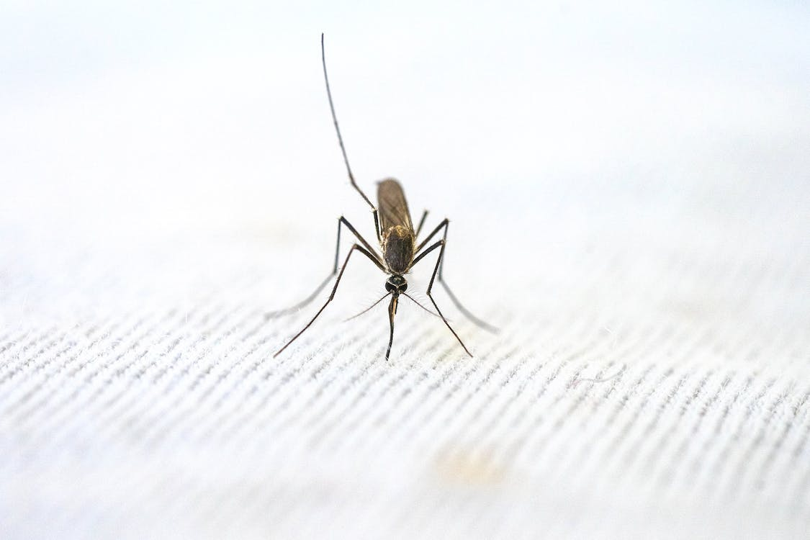
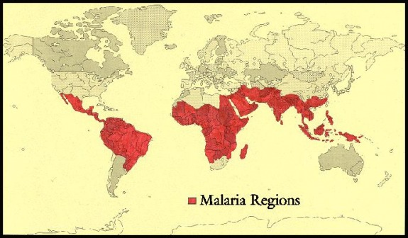

MALÁRIA
09/10/2023 Introdução
A malária, também referida como impaludismo, paludismo ou febre palustre, é uma doença infecciosa febril aguda originada de protozoários pertencentes ao gênero Plasmodium, que são transmitidos ao ser humano pela picada de fêmeas do mosquito do gênero Anopheles. Neste estudo, apresentaremos uma análise abrangente dos aspectos clínicos, epidemiológicos e de controle da malária, priorizando uma avaliação da situação no Brasil.
Sintomatologia da Malária
Os sintomas característicos da malária incluem:
- - Febre alta
- - Calafrios
- - Tremores
- - Sudorese intensa
- - Cefaleia cíclica
Estes sintomas frequentemente se manifestam após a ocorrência de náuseas, vômitos, astenia e anorexia. Os casos graves de malária são associados a uma gama de manifestações que incluem prostração, distúrbios da consciência, dispneia, convulsões, hipotensão arterial, choque e hemorragias. Grupos de maior vulnerabilidade à doença incluem gestantes, crianças e indivíduos recém-infectados, principalmente quando a infecção é causada por Plasmodium falciparum, podendo, se não diagnosticada e tratada apropriadamente e em tempo hábil, resultar em complicações fatais.
Transmissão
A malária é transmitida por meio da picada de fêmeas do mosquito do gênero Anopheles, que carregam uma ou mais espécies de protozoários do gênero Plasmodium. Essas picadas ocorrem geralmente ao anoitecer, ao amanhecer e durante a noite. É crucial ressaltar que a malária não é transmitida diretamente de um indivíduo infectado para outro, mas sim por vetores, como os mosquitos Anopheles. Além da transmissão vetorial, existem formas mais raras de transmissão da doença, como transfusão sanguínea, uso de seringas contaminadas, acidentes laboratoriais e transmissão congênita.
Medidas de Prevenção
A prevenção da malária é de suma importância e pode ser realizada tanto em nível individual quanto coletivo. Medidas de prevenção individual englobam:
Os sintomas característicos da malária incluem:
- - O uso de mosquiteiros tratados com inseticida
- - Utilização de vestimentas que cubram braços e pernas
- - Instalação de telas em portas e janelas
- - Aplicação de repelentes
Medidas de prevenção coletiva incluem:
- - Borrifação residual intradomiciliar
- - Uso de mosquiteiros impregnados com inseticida de longa duração
- - Drenagem e aterro de potenciais criadouros do mosquito
- - Melhorias de saneamento básico para eliminar criadouros
- - Limpeza de áreas próximas a criadouros
- - Modificação do fluxo da água
- - Controle de vegetação aquática
- - Aperfeiçoamento das condições de moradia e de trabalho
- - Uso adequado da terra
Importante mencionar que, no contexto brasileiro, não existe uma vacina eficaz contra a malária, embora pesquisas estejam em andamento.
Situação Epidemiológica da Malária
A malária é um problema de saúde pública a nível global, impactando especialmente regiões tropicais e subtropicais. De acordo com dados da Organização Mundial de Saúde (OMS), em 2021, foram registrados 247 milhões de casos de malária em 84 países endêmicos, representando um aumento em relação a 2020. A maioria desse incremento ocorreu na Região Africana.
No Brasil, a região amazônica é considerada endêmica, sendo responsável por 99% dos casos autóctones. Apesar disso, regiões fora da Amazônia também registram casos, frequentemente importados de áreas endêmicas. A letalidade da doença varia consideravelmente, com taxas mais elevadas em áreas não endêmicas.